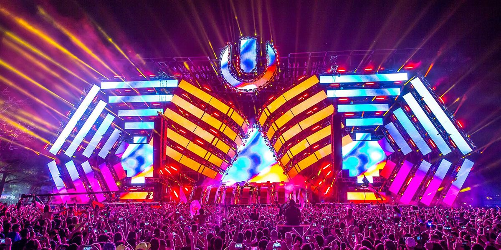

¿Qué es la Música Electrónica?
La música electrónica es un género musical que utiliza tecnología electrónica y digital para crear sonidos. Desde el techno hasta el house, y el trance hasta el dubstep, la música electrónica abarca una amplia gama de estilos y subgéneros que son populares en todo el mundo.
La música electrónica abarca una amplia variedad de estilos y subgéneros, incluyendo el techno, house, trance, drum and bass, dubstep, ambient, EDM (Electronic Dance Music) y muchos otros. Cada subgénero tiene sus propias características sonoras y estilísticas que los distinguen entre sí. A lo largo de los años, la música electrónica ha evolucionado significativamente, pasando de ser un fenómeno de nicho a un género musical ampliamente popular en todo el mundo.
Historia
Los primeros pasos en la música electrónica se dieron en el siglo XX con la invención de sintetizadores y dispositivos electrónicos capaces de generar sonidos artificiales. Artistas pioneros como Wendy Carlos y Karlheinz Stockhausen exploraron las posibilidades de estos dispositivos en la creación de música sin precedentes. A medida que la tecnología avanzaba, surgieron géneros como el ambient y la música concreta, que experimentaron con la manipulación y la transformación de sonidos grabados.
Década de 1940: Los primeros experimentos en música electrónica datan de la década de 1940 con compositores como Pierre Schaeffer y Karlheinz Stockhausen, quienes exploraron técnicas de manipulación de sonido y cintas magnéticas.
Década de 1950: La invención del sintetizador modular por Robert Moog en la década de 1960 marcó un hito importante. Artistas como Wendy Carlos utilizaron este instrumento para crear música electrónica más accesible.
Décadas de 1970-1980: Surgieron géneros como el krautrock, el disco y el synth-pop, que incorporaron elementos electrónicos en la música popular.
Décadas de 1990-2000: Se desarrollaron géneros como el techno, el house, el trance y el drum and bass. La música electrónica comenzó a tener un impacto significativo en la cultura de los clubes y los festivales.
Siglo XXI: La música electrónica continuó evolucionando con la proliferación de software de producción, lo que permitió a más personas crear música electrónica. Los festivales de música electrónica se convirtieron en eventos masivos y los DJs/productores electrónicos alcanzaron una fama global.
Festivales
Los festivales de música electrónica atraen a fanáticos de todo el mundo. Eventos como Tomorrowland, Ultra Music Festival y Electric Daisy Carnival ofrecen experiencias inolvidables llenas de música, luces y emociones.
Importancia De La Música Electrónica
La música electrónica es un género musical que utiliza tecnología electrónica y digital para crear sonidos y composiciones. Su importancia radica en varios aspectos, que van desde su impacto en la industria musical hasta su influencia en la cultura y la sociedad. Aquí tienes una visión general de la importancia de la música electrónica junto con su historia:
Innovación Tecnológica: La música electrónica ha sido un campo de experimentación tecnológica desde sus inicios. A medida que se desarrollaban nuevos dispositivos y técnicas, los músicos electrónicos exploraban formas innovadoras de crear sonidos.
Expansión de Géneros y Estilos: La música electrónica ha dado lugar a una amplia gama de subgéneros y estilos, desde el techno y el house hasta el trance, el dubstep, el drum and bass y muchos más.
Conexión Global: La música electrónica ha logrado unir a personas de diferentes culturas y países en torno a una pasión compartida. Los DJs y productores pueden alcanzar audiencias globales a través de plataformas en línea y redes sociales, lo que ha contribuido a una mayor interconexión en el mundo de la música.